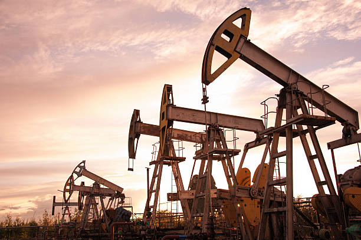

Oil is a major part of the global economy. Ever since the invention of the automobile, many countries have come to heavily rely on oil and other natural resources for daily transportation and power. That being said, oil is not limitless. It is a non-renewable resource that can't be found everywhere. This makes oil a rare and valuable commodity that many countries want and need in order to function. The need is so great that countries are willing to go to war in order to maintain a steady supply of oil for its citizens. The Middle East has quite a lot of natural resource deposits that contain oil which has had major effects on Middle Eastern Countries. In this study, we will take a brief look at why we are interested in oil that is found in the Middle East and investigate the effects it had across the region through various case studies of some of the major countries in the Middle East that have gained the most from the discovery of oil.

